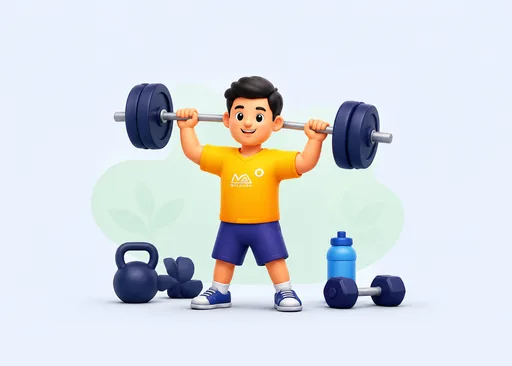
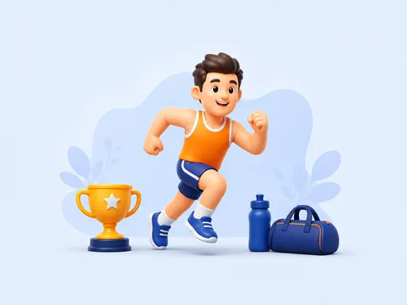

Rahbarlar

Murabbiylar
Metodistlar

Sportçilar
Antidoping siyosati, taşkiliy tuzilma, ovqatlaniş nazorati, safar checklist, byudjet va hujjatlar.
Maşğulot rejalaştiriş, ovqatlaniş nazorati, sportçi salomatligi, TUE va şaxsiy javobgarlik.
WADA hujjatlari, ADAMS tizimi, SMS-tahlil, federatsiyalar koordinatsiyasi, TUE va hisobotlar.
Toza sport, BAD xavfi, TUE, Whereabouts, şaxsiy javobgarlik va doping-kontrol protsedurasi.
Oskar sovrindori va dunyo miqyosida e’tirof etilgan filmlar — pedagogik tahlil bilan.
Sportçilar va tinglovçilar uçun 13 ta audio dars. Tinglang, töliq matnini öqing va Word shaklida yuklab oling.
Haqiqiy doping voqealari asosida örganiş — xato va töğri yöl, WADA qoidalari.
WADA atamalarining özbekça izohli luğati — 35+ atama, qidiruv va alifbo filtri.
WADA Code 2021/2026, TUE tartibi, BAD xavfi, Doping-nazorat bosqiçlari, Whereabouts/ADAMS va 4 ta vaziyatli tahlil
| Kat. | Modda nomi | Misollar | Ta’siri | Xavf darajasi |
|---|
Sun’iy yordamsiz, raqibga hurmat.
Tanangiz — asosiy kapital. Doping uni buzadi.
Strict Liability — organizmingizda topilgan har qanday modda uçun şaxsan javobgarsiz.
Oldindan diagnostik test (ADKT-25), şaxsiy bilim profili, individual öquv rejasini tuziş, motivatsiya darajasini baholaş (DMS-12).
WADA Kodeks 2021, Özbekiston "Antidopingga qarşi" qonuni, Strict Liability, Whereabouts tizimi, TUE protsedurasi, doping-kontrol protsedurasi, ADRVning 11 turi (2.1–2.11).
ADAMS platformasida işlaş, Taqiqlangan röyxatda qidiriş, TUE arizasini töldiriş, mahsulot etiketini tahlil qiliş, DCO simulyatsiyasi, ADEL kurslari.
6 ta haqiqiy voqea: BAD kontaminatsiyasi, şifokor xatosi, oşpaz xatosi, 3 missed test, DCO rad etiş, favqulodda deksametazon. Guruh muhokamasi + qaror qabul qiliş.
Play True tamoyillari, soxta natijaning oqibatlari, toza sportçilar misoli, dopingdan keyin hayot, raqibga hurmat.
Keyingi diagnostik test (ADKT-25), motivatsiya özgarişi (DMS-12), 75%+ = Özlaştirildi tasdiqnomasi, ADAMS da qayd etiş, yillik yangilaniş rejasi.
Hali heç qanday test topşirilmagan.
Yuqoridagi modullardan birini tanlang.
🔒 Natijalar faqat qurilmangiz brauzerida (localStorage) saqlanadi va istalgan vaqtda tozalaşingiz mumkin.
75% dan yuqori natijada Özlaştirildi tasdiqnomasi beriladi
Test topşiring va reytingda körining!
WADA, UzNADO, Institut va boşqa rasmiy platformalarga töğridan-töğri kirişlar
Jahon Antidoping Agentligi. Taqiqlangan röyxat, Kodeks, standartlar, yangiliklar.
wada-ama.org →Rasmiy özbek ta’lim platformasi. Onlayn kurslar, testlar, sertifikatlaş.
talim-uznada.uz →Sportçilar Malakasini Oşiriş Instituti — yangiliklar, dasturlar, ilmiy işlar.
sportedu.uz →Whereabouts, test natijalari, TUE holati, sportçi profili boşqaruvi.
ADAMS →2026-yil WADA Prohibited List — töliq va yangilangan röyxat.
Prohibited List →WADA bepul onlayn ta’lim platformasi. 20+ til, 50+ kurs, sertifikat.
adel.wada-ama.org →Taşkil etiş, nazorat, byudjet, siyosat
Ta’lim, oşpaz, ovqat nazorati, UzNADO bilan hamkorlik
Test xarajatlari, tibbiy körik, biologik pasport
Institut va UzNADO kurslari, sertifikatlar
Favqulodda, huquqiy yordam, apellyatsiya
⚠️ Doping holati xarajati = profilaktika xarajatining 10-50 baravari (jarima + advokat + obrö yöqotiş)
Maşğulot, ovqat, salomatlik, javobgarlik
WADA hujjatlari, ADAMS, SMS, federatsiyalar
| Xabar turi | Javob muddati | Qoidabuzarlik | Natija |
|---|---|---|---|
| Whereabouts yangilaş | Çorak oxiri | Filing failure | 3 da = 1–2 yil |
| 48s eslatma | Darhol yangilaş | Filing failure | Sanalar kitobida |
| Missed test | 14 kun javob | Whereabouts failure | 3 da = 1–2 yil |
| ATF (Atypical) | 10 kun | Kutiladi | Tahlil davom etadi |
| AAF (Adverse) | 10 kun (B-namuna) | ADRV 2.1/2.2 | 2-4 yil / umrbod |
| TUE rad etildi | 21 kun apellyatsiya | AAF sifatida | CAS ga murojaat |
Toza sport, BAD, TUE, javobgarlik, doping-kontrol
Yoş yuguruvçiga dösti tez tiklaniş uçun noma’lum «vitamin» in’ektsiyasini taklif qildi. U «Yöq, men faqat şifokor tasdiqlagan narsani qabul qilaman» dedi — va yutuği özinikiligiça qoldi.
Sportçi onlayn «tabiiy kuç» kapsulasini buyurtma qildi: yorliqda faqat ösimlik ekstrakti yozilgan, lekin mustaqil laboratoriya tahlili yöq — tarkib noma’lum.
Astmasi bor sportçi ingalyator turi va dozasini şifokor bilan oldindan belgiladi va kerak bölsa TUE arizasini musobaqadan ança oldin topşirdi.
Öquv-maşğulot yiğini joyi özgargaç sportçi ADAMS’ni öşa kuni ertalab yangiladi va 60 daqiqalik oynani maşğulotdan keyingi böş vaqtga qöydi.
Şifokor yozgan şamollaş dorisida taqiqlangan modda bor edi. Sportçi faol moddani tekşirmagani uçun javobgar böldi: «şifokor yozdi» himoya bölmadi.
Musobaqadan keyin vakil kelganda sportçi vakolat hujjatini kördi, koordinatorga xabar berdi, yopiq idişni özi tanladi va protokolni öqib imzoladi.
Sportçi şamollaganda dorixonada «men sportçiman» deb aytdi, faol moddani telefonda tekşirdi va faqat şundan keyin sotib oldi.
Maşhur misollardan (Ben Johnson, Marion Jones, Lance Armstrong) umumiy xulosa: yutuqlar bekor böladi, nom yöqoladi. Asosiy savol — ular qanday bosim ostida qaror qilgani va ularni kim qöllab-quvvatlagani.
Noaniq natija haqida xabar kelganda sportçi vahimaga tuşmadi: huquqlarini va muddatlarni yozma aniqlab oldi, dalillarni (qadoq, retsept, çek) yiğdi va koordinator hamda huquqşunosga murojaat qildi.
Çet elga ketişdan oldin sportçi dorilar röyxatini inglizça tayyorladi, retsept va koordinator xatini qöl yukida olib yurdi hamda mehmonxona manzilini ADAMS’ga kiritdi.
Oskar sovrindori va e’tirof etilgan filmlar — pedagogik tahlil
Amerikalik velosipedçi Bryan Fogel şaxsiy doping tajribasi ötamoqçi bölib, rus spor daktori Grigory Rodçenkov bilan boğlanadi. Şu jarayonda Rossiyaning 2014 Soçi olimpiada davridagi davlat darajasidagi doping tizimini foş qiladi.
Davlat dopingi: Soçi 2014 da namunalarni sirli teşik orqali almaştiriş — bu WADA Kodeksiga 21.2-modda (taşkilot mas’uliyati) kiritilişiga asos böldi.
Whistleblower: Rodçenkov xavf ostida haqiqatni foş qildi — WADA "Safe Harbor" siyosatining ahamiyatini körsatdi.
Dars: hatto milliy darajadagi tizim ham yaşirin bölişi mumkin — individual mas’uliyat muhim.
7 marta Tour de France ğolibi, saraton kasalligini yengib qaytgan qahramonning puç çiqişi. Butun dunyo aldangan — asosida yolğon va tahdidlar bor edi.
"Çeksiz hokimiyat" xavfi: Şon-şuhrat va boylik — doping yaşirişning qalqoni böldi. Hamma kördi, heç kim gapirmasdi.
Jamoa bosimi: Jamoadoşlarni majburlaş — "boşqa yöl yöq" degan yolğon millionlar oldida yaşirildi.
Foş: 2012 USADA hayotiy diskvalifikatsiya, 7 ğala bekor qilindi, homiylar şartnomalarni uzdi.
Dars: eng katta ğalaba ham pirovardida qulab tuşadi — toza sport — bardavom.
Rejissor Alex Gibney dastlab Armstrong qaytişini muvaffaqiyat hujjati sifatida filmga olmoqçi edi. Lekin 2013 yilda Armstrong hamma narsani e’tirof etgaç, film butunlay boşqaça yönalişga burildi — içkaridan körilgan yolğon va tanazzul.
Öz-özini aldaş: Armstrong özini ham, boşqalarni ham işontirgan — bu doping madaniyatidagi psixologik mexanizm.
Tizim muammosi: Tour de France da deyarli hamma doping qilgan — faqat Armstrong "yutgan". Bu sportning tizimli muammosi.
E’tirof va oqibat: Oprah intervyusi, 100M$ da’vo, umrbod ban — yolğonning qiymati.
Dars: bir yöl bilan boşlangan doping — hayot yölini butunlay özgartiradi.
1998-yilda Tour de France va Giro d’Italia’ni bir yilda yutgan italyan velosipedçi Marko Pantaniyning kötarilişi va qulaşi haqida film. U doping mojarolari velosportni yöq qiliş xavfi ostiga qöygan paytda «sportni qutqargan qahramon» sifatida qabul qilingan edi, 2004-yilda esa 34 yoşida yolğiz vafot etdi. Film arxiv lavhalari, qayta tiklangan sahnalar va oila, döstlar hamda raqiblar (Greg LeMond, Evgeni Berzin, Bradley Wiggins) bilan intervyulardan tuzilgan; Matt Rendell kitobiga asoslangan.
Festina mojarosi: 1998-yilgi Tour davomida Festina jamoasi masajçisi katta miqdordagi taqiqlangan moddalar bilan uşlandi, politsiya jamoalarni tekşirdi — poyga töxtab qoliş arafasiga keldi. Bu öşa davrda doping nazorati tizimi zaif bölganini körsatdi.
Gematokrit va çetlatiş: 1999-yilgi Giro d’Italia’da Pantani qon quyuqligi (gematokrit) çegaradan yuqori çiqqani uçun poygadan çetlatildi — bu EPO işlatilişi gumonini keltirdi. Film bu voqeani bahsli talqin qiladi (fitna nazariyalarini ham körsatadi): tarixiy faktlarni rasmiy manbalar bilan soliştiring. Keyinçalik bunday bilvosita körsatkiçlar örniga qon körsatkiçlarini vaqt böyiça kuzatuvçi biologik pasport (ABP) tizimi joriy etildi.
Ruhiy salomatlik: Mojarodan keyin Pantani çuqur tuşkunlik va giyohvandlikka tuşib qoldi. Film sportçining ruhiy holati va atrofdagilar mas’uliyatiga e’tibor qaratadi.
Dars: doping tizimi faqat sportçini emas, uning atrofini ham buzadi; şuhrat bosimi va yolğizlik xavfni oşiradi. Muhokama: kim nima uçun jim qoldi? Murabbiy va jamoa sportçini himoya qiliş uçun nima qila olardi?
Rejissyor Chris Bell (özi ham sobiq steroid iste’molçisi) akalari Mike va Mark Bell hayoti orqali Amerikada steroidlar va «ğalaba uçun hamma narsa» madaniyatini tekşiradi. Film steroidlarni na maqtaydi, na qoralaydi — savol qöyadi: qahramonlaringiz qoidani buzgan bölsa, siz nima qilasiz?
«Hamma qiladi» vasvasasi: film «ğalaba hamma narsadan muhim» qaraşi qanday qilib doping uçun oqlov yaratişini körsatadi — bu qoidabuzarlikni «normallaştiriş» mexanizmi.
Bosim — jamoaviy mahsul: sportçilar, murabbiylar, şifokorlar, ommaviy axborot vositalari va muxlislar birgalikda bosim yaratadi. Individual javobgarlik (Strict Liability) saqlanadi, lekin muhitni ham tahlil qiliş kerak.
Tanqidiy qaraş: film dopingga oid ba’zi bahsli fikrlarni ilgari suradi. Pedagogik maqsadda uni tibbiy va WADA manbalari bilan soliştirib köring; bu filmni «toza sport» uçun körsatma emas, muhokama materiali sifatida işlating.
Dars: savol «hamma qiladimi?» emas, «men qanday sportçi bölişni tanlayman?». Muhokama: toza sportni himoya qiliş uçun jamiyat nima qilişi kerak?
Haqiqiy doping voqealari asosida — xato va töğri yöl
Yoş yengil atletikaçi onlayn dökondan "tabiiy protein" va "mass gainer" sotib oldi. 2 hafta işlatgandan keyin musobaqada doping-kontrol — natija musbat (nandrolon dekaraboldi). Sportçi şok böldi: "Men faqat protein oldim!"
Sertifikatsiz onlayn dökondan xarid qiliş; "tabiiy" yozuviga kör-körona işoniş; tarkibni öqimagan; koordinatorga xabar bermagan.
FAQAT Informed Sport, NSF, Cologne List sertifikatlangan brendlar; har qanday qöşimça olişdan oldin tarkibni tekşiriş; murabbiy va koordinator tasdiqi.
Kodeks 2.1 + Strict Liability. "Contaminated Product" — "No Significant Fault" da 1 yilga qisqarişi mumkin. Natija: 1 yil diskvalifikatsiya. Sertifikatsiz BAD = lotereya.
Kodeks 2.1: organizmda taqiqlangan modda topilişining özi qoidabuzarlik — qasd yoki ayb şart emas. Modda qanday kirgani (masalan, ifloslangan mahsulot) isbotini sportçi keltirişi kerak.
Qasd isbotlansa — odatda 4 yil, qasd bölmasa — 2 yil. Ifloslangan mahsulot va past ayb darajasi isbotlansa jazo ança qisqarişi mumkin. Natijalar bekor qilinadi, qoidabuzarlik ommaga e’lon qilinişi mumkin.
Sportçi: qadoq, çek va partiya raqamini saqlang. Murabbiy: har bir qöşimçani oldindan tasdiqlang. Rahbar: sertifikatsiz mahsulotni jamoaga kiritmaslik siyosatini joriy qiling.
1) «Tabiiy» yozuvi nima uçun xavfsizlik kafolati emas?
2) Sertifikatli mahsulot ham nima uçun 100% kafolat bermaydi?
3) Isbot sifatida nimalarni saqlaş kerak?
Musobaqa oldi sportçi burun bitişi uçun mahalliy şifokorga bordi. Şifokor psevdoefedrinli gripp tabletkasini yozdi. Sportçi "şifokor yozdi" deb içdi. Test — musbat.
"Şifokor retsepti = xavfsiz" deb notöğri xulosalaş; faol moddalarni Röyxatda tekşirmaslik; koordinator va murabbiyga maslahat bermaslik.
Har qanday dori olişdan oldin: (1) faol moddalarni aniqlaş, (2) WADA röyxatida tekşiriş, (3) taqiqlangan bölsa — muqobil söraş yoki TUE oliş. Retsept himoya emas.
Kodeks 2.1 — "Şifokor yozdi" himoya bölmaydi. Natija: 2 yil. Şifokor ham professional javobgarlikka tortilişi mumkin.
Psevdoefedrin musobaqa davrida taqiqlangan stimulyator (siydikdagi miqdor belgilangan çegaradan oşganda). Kodeks 2.1: «şifokor yozdi» degani himoya bölmaydi — dori tanlaş va tekşiriş sportçining zimmasida.
Odatda 2 yilgaça; qasd yöqligi va past ayb darajasi isbotlansa ança qisqarişi mumkin. Retsept yozgan şifokor ham professional javobgarlikka tortilişi mumkin.
Sportçi: şifokorga «men sportçiman» deng va faol moddani tekşiring. Murabbiy: xorijda şifokorga borişdan oldin koordinatorga xabar bering. Rahbar: tasdiqlangan dorilar röyxati va tibbiy sumka tayyorlang.
1) Retsept nima uçun himoya emas?
2) Şifokorga borişdan oldin qaysi 3 qadamni bajarasiz?
3) Kombinatsiyalangan şamollaş dorilarida nimani tekşirasiz?
Boks jamoasi xorijiy lager uçun mahalliy bozordan sertifikatsiz göşt sotib oldi. 5 kundan keyin test — klenbuterol topildi. Rahbar: "Oşpaz qildi, biz bilmadik."
Noma’lum manbadan göşt oliş; vet.sertifikat talab qilmaslik; Xitoy/Meksika göştidan foydalaniş (klenbuterol xavfi yuqori).
FAQAT sertifikatlangan xöjaliqdan; har partiya vet.sertifikat; safarda — öz ovqat yukini olib boriş; mahalliy restoran — taqiqlangan.
Kodeks 2.1 + 10.5.1.1 "Contaminated Product". "No Significant Fault" da kamaytiriş mumkin (rahbar mas’uliyati isbotlansa). Mahalliy göşt — eng yaşirin xavf.
Klenbuterol har doim taqiqlangan anabolik modda. Ayrim mamlakatlarda çorva göşti ifloslanişi hollari ma’lum bölgani uçun bunday holatlar alohida baholanadi, lekin isbot yuki baribir sportçida.
Standart jazo qasdga boğliq (4 yilgaça); ifloslangan göşt isbotlansa va ayb darajasi past bölsa ança qisqarişi mumkin. Ayrim hollarda jamoa rahbari va oşpaz iştiroki ham tekşiriladi.
Sportçi: xavfli mamlakatlarda göşt iste’mol qilişdan ehtiyot böling. Murabbiy: ovqat rejasini oldindan kelişing. Rahbar: oşpaz va yetkazib beruvçi sertifikati hamda har partiya veterinar hujjatini talab qiling.
1) «Oşpaz qildi» nega himoya emas?
2) Safarda ovqat xavfsizligi rejasini qanday tuzasiz?
3) Sportçi, oşpaz va rahbar örtasida mas’uliyat qanday taqsimlanadi?
Suzuvçi 12 oy içida 3 marta körsatilgan joyda bölmadi: bir marta ADAMS yangilamagan, ikki marta keçikkan. UzNADO — 2 yil diskvalifikatsiya.
ADAMSni muntazam tekşirmaslik; joy özgarişini darhol yangilamaslik; şoşilinç holatda UzNADO ga xabar bermaslik; "bir marta böldi" deb e’tibor bermaslik.
ADAMS kundalik odatga aylantiriş; joy özgarganda — DARHOL yangilaş; şoşilinç bölsa — 24 soat içida UzNADO ga xabar + dalillar saqlaş.
Kodeks 2.4 — 3 ta failure = 2 yil (birinçi marta). ADAMS har kuni = muammo yöq. Oddiy odatni şakllantiriş = katta jazodan qutuliş.
Kodeks 2.4: 12 oy içida 3 ta qoidabuzarlik (Whereabouts ma’lumotini topşirmaslik yoki körsatilgan 60 daqiqalik vaqtda joyda bölmaslik) — özi qoidabuzarlik. Birinçi ogohlantiriş kelganda uni qayta körib çiqişni söraş muddatlari qisqa.
Jazo odatda 1 yildan 2 yilgaça (ayb darajasiga qarab). Hisob ketma-ket emas, 12 oylik oyna böyiça yuritiladi — eski xato ham hisobda qoladi.
Sportçi: ADAMS’ni har kuni tekşiring va 60 daqiqalik oynani real jadvalga moslang. Murabbiy: jadval özgarişini sportçi bilan birga yangilang. Metodist: oylik tekşiruv va eslatma tizimini yuriting.
1) 60 daqiqalik oyna nima uçun real jadvalga mos bölişi kerak?
2) Qaysi xato «topşirmaslik», qaysi biri «joyda yöqlik»?
3) Qanday eslatma tizimi işlaydi?
Musobaqadan keyin DCO keldi. Sportçi: "Hozir vaqtim yöq, ertaga kelamiz." 3 marta ogohlantirişdan keyin ham rad. Natija: 4 yil diskvalifikatsiya.
"Vaqtim yöq" bahonasi; DCO ogohlantirişlarini e’tiborsiz qoldiriş; koordinatorni xabardor qilmaslik; öz-öziça qaror qiliş.
DCO kelganda: vakolat tekşiriş → koordinatorni çaqiriş → 30 daqiqa tayyor böliş → namuna beriş. HEÇ QAÇON boş tortmaslik.
Kodeks 2.3 — boş tortiş = 4 yilgaça. Bu eng oğir ADRVlardan biri. Soğliq bahonasi ham qabul qilinmaydi — DCO tibbiy yordam beradi.
Kodeks 2.3: bildirişnomadan keyin namuna berişdan boş tortiş yoki qoçiş — qoidabuzarlik. Xabarnomadan söng sportçi doping-nazorat vakili (yoki hamrohi) nazoratida böladi; jiddiy sabab bölsa ham u jarayon içida kelişiladi.
Qasd bilan bölsa odatda 4 yil. Keyinçalik «bilmasdim» yoki «vaqtim yöq edi» deyiş odatda yordam bermaydi.
Sportçi: huquqlaringizni biling (vakil bilan birga böliş, savol beriş), lekin jarayonni keçiktirmang. Murabbiy: jamoani oldindan örgating. Rahbar: musobaqadan keyin doping-nazorat uçun joy va mas’ul belgilang.
1) DCO kelganda dastlabki 3 qadam nima?
2) Qaysi sabab uzrli hisoblanişi mumkin, qaysi biri yöq?
3) Xabarnomadan keyin sportçi qayerda bölişi kerak?
Turnir oldi tirsak oğrigi kuçaydi. Mahalliy şifokor deksametazon in’ektsiya qildi (retseptsiz, TUE yöq). Test — musbat. "Favqulodda edi."
TUE oldindan olinmagan; retseptsiz in’ektsiya; muqobil usullar (intra-artikulyar — ruxsat) körib çiqilmagan.
(1) intra-artikulyar (böğin içiga) — ruxsat etilgan, UzNADO ga xabar; (2) boşqa yöl yöq bölsa — retroaktiv TUE (7 kun içida).
S9 glyukokortikoidlar: oral/IV — taqiqlangan; intra-artikulyar — ruxsat. Retroaktiv TUE — 7 kun içida imkoniyat bor. Bu farqni biliş muhim!
S9: glyukokortikoidlar musobaqa davrida oğiz, vena, muşak yoki töğri içak orqali yuborilsa taqiqlangan; böğin içiga (intra-artikulyar) va teriga ruxsat etiladi. Favqulodda holatda retroaktiv TUE mumkin.
TUE bölmasa — qoidabuzarlik; odatda 2 yilgaça, qasd yöqligi isbotlansa yengillaşişi mumkin.
Sportçi: in’ektsiyadan oldin «men sportçiman» deng, dori va yuboriş yölini yozma sörang. Murabbiy: jarohat protokoli va ruxsat etilgan yöllar röyxatini tayyorlang. Rahbar: xorijda işonçli klinika va tarjimon ta’minlang.
1) Deksametazon qaysi yöl bilan yuborilganda taqiqlangan?
2) Favqulodda holatda hujjatlarni saqlaş nima uçun muhim?
3) Intra-artikulyar in’ektsiya haqida nima uçun xabar beriş tavsiya etiladi?
Köp kunlik poyga tugagaç, jamoa şifokori keçqurun mehmonxonada velosipedçiga 500 ml vena infuziyasi qöydi: «tezroq tiklanadi». Kasalxonaga yotqiziş yoki şoşilinç holat yöq edi. Keyingi kuni sportçi doping-nazorat varağiga bu haqda yozdi.
Infuziya hajmi va sababini oldindan tekşirmaslik; «tiklaniş» maqsadida qöyiş; şifokorning «bu odatiy» degan gapiga işoniş; UzNADO yoki koordinatorga oldindan murojaat qilmaslik.
Tiklaniş uçun oğiz orqali suyuqlik, elektrolit va ovqatlaniş. Haqiqiy tibbiy zarurat bölsa — şifokor sababni yozma qayd etadi, hajm 12 soatda 100 ml dan oşmasligi kerak, holat UzNADÖga xabar qilinadi (zarur bölsa retroaktiv TUE).
M2: 12 soat içida 100 ml dan ortiq vena infuziyasi yoki in’ektsiya taqiqlangan (kasalxonaga yotqiziş, jarrohlik, şoşilinç yordam yoki klinik tekşiruv bundan mustasno). «Tiklaniş uçun kapelnitsa» — qoidabuzarlik.
Taqiqlangan usul (M2): hajmi 100 ml dan oşuvçi vena infuziyasi har doim taqiqlangan; istisnolar — kasalxonaga yotqiziş, jarrohlik muolajalari va klinik diagnostika. Qoida moddaga emas, usulning öziga tegişli.
Taqiqlangan usulni qöllaş (ADRV 2.2) uçun odatda 2 yil, qasd isbotlansa 4 yilgaça. Soğliq uçun haqiqiy zaruratda holat TUE bilan boşqaça baholanadi.
Sportçi: «kapelnitsa» taklif qilinsa hajm va sababni sörang. Murabbiy: jamoa şifokori bilan tiklaniş protokolini oldindan kelişing. Rahbar: tiklaniş uçun faqat tasdiqlangan usullar röyxatini yuriting.
1) Vena infuziyasi qaçon ruxsat etiladi?
2) Nima uçun bu qoida moddaga emas, usulga tegişli?
3) Tiklanişning qanday ruxsat etilgan usullari bor?
Sportçi töy-bayramda döstlari bilan kannabis çekdi, bir neça kundan söng kutilmagan test ötkazildi. Natija — THC musbat. Sportçi: «Bu musobaqa emas edi, natijaga ta’siri yöq!»
Rekreatsion moddani «sport bilan aloqasi yöq» deb baholaş; test oldindan xabarsiz bölişi mumkinligini unutiş; iste’mol vaqti va ta’sir muddatini hisobga olmaslik.
Taqiqlangan moddani umuman iste’mol qilmaslik; bosim ostida «yöq» deyişni oldindan maşq qiliş; boğliqlik sezilsa mutaxassisga murojaat qiliş; musbat bölsa — jarayonda hamkorlik qiliş va holatni halol tuşuntiriş.
Kannabis (THC) musobaqa davrida taqiqlangan. Musobaqadan taşqarida va sport natijasiga aloqasiz qabul qilingani isbotlansa jazo yengillaşişi mumkin — bu «rekreatsion modda» qoidasi, kafolat emas.
S8: THC musobaqa davrida taqiqlangan; kannabidiol (CBD) taqiqlanmagan, lekin mahsulotda THC aralaşmasi bölişi mumkin. «Rekreatsion moddalar» (kannabis, kokain, ekstazi, geroin) uçun yengillaştiruvçi qoida bor: musobaqadan taşqarida va natijaga aloqasiz qabul qilinganini sportçi isbotlaşi kerak.
Qoida şartlari isbotlansa jazo odatda 3 oygaça, davolaniş dasturini tugatsa 1 oygaça qisqarişi mumkin. Isbotlanmasa — odatdagi, oğirroq jazo. Obröga zarar baribir yetadi.
Sportçi: ijtimoiy tadbirlarda «yöq» deyişga tayyor böling. Murabbiy: oçiq suhbat — jazo emas, yordam. Rahbar: sport psixologi va narkolog bilan hamkorlik örnating.
1) «Rekreatsion modda» qoidasi nimani anglatadi va nimani anglatmaydi?
2) CBD mahsuloti nima uçun xavfli bölişi mumkin?
3) Döstlar bosimiga qanday javob berasiz?
15 yoşli gimnastning onasi «kuç va diqqat uçun» çet eldan BAD olib keldi, murabbiyga aytilmadi. Tanlov doping-nazoratida sportçida taqiqlangan stimulyator topildi; mahsulot yorliğida bu modda körsatilmagan edi.
Ota-onaning mahsulotni özi olib kelişi va akademiyaga xabar bermasligi; yoş sportçining «onam berdi» deb tarkibni tekşirmasligi; akademiyada BAD siyosati va ota-ona bilan yozma kelişuv yöqligi.
Barça qöşimçalar faqat şifokor va murabbiy kelişuvi bilan; ota-onalar uçun antidoping yiğilişi va yozma tanişiş; mahsulotni oldindan sertifikat va tarkib böyiça tekşiriş; voyaga yetmagan sportçi namuna berayotganda işonçli vakil bilan birga.
Yoş sportçi himoyalangan şaxs sifatida alohida qoidalar bilan köriladi, lekin qoidabuzarlik qayd etiladi. Asosiy mas’uliyat kattalar zimmasida: ota-ona, murabbiy, rahbar.
Kodeks 2.1 yoş sportçiga ham tegişli. Himoyalangan şaxslar (odatda 16 yoşgaça, ayrim hollarda 18 yoşgaça) uçun jazolaş va oşkor qiliş tartibi yumşoqroq; asosiy urğu ta’lim va tarbiyada. Aniq mezonlarni UzNADO hujjatlaridan tekşiring.
Jazo ogohlantirişdan 2 yilgaça (aybga qarab) bölişi mumkin; natijalar bekor qilinadi va soğliq xavfi saqlanadi. Ota-ona yoki murabbiy iştirokiga şubha bölsa — alohida tekşiruv oçilişi mumkin.
Ota-ona: har qanday qöşimçani murabbiyga körsating. Murabbiy: akademiyaga kirişda yozma BAD siyosatini tuşuntiring. Rahbar: ota-onalar uçun yillik antidoping yiğilişi ötkazing.
1) Voyaga yetmagan sportçi bilan birga ota-onani ham nima uçun öqitiş kerak?
2) Qöşimça beriş qaroriga kim javobgar?
3) Akademiyada qanday yozma qoida bölişi lozim?
Boksyor sanksiya olgan sobiq murabbiy bilan «şaxsiy dars» olişda davom etdi. UzNADO sportçiga yozma ogohlantiriş yubordi, lekin u «u menga şunçaki yordam beradi, doping bilan aloqasi yöq» deb hamkorlikni töxtatmadi.
Yozma ogohlantirişni e’tiborsiz qoldiriş; hamkorlikni «şaxsiy iş» deb baholaş; rasmiy jamoa xodimi bölmagan mutaxassis bilan işlaş; koordinatorni xabardor qilmaslik.
Yangi hamkorni olişdan oldin UzNADO va federatsiya sanksiya ma’lumotlarini tekşiriş; ogohlantiriş kelsa — darhol töxtatiş va yozma tasdiqlaş; şubha bölsa koordinatorga murojaat qiliş.
Jazolangan yordamçi xodim bilan kasbiy hamkorlik — alohida qoidabuzarlik, hatto doping topilmasa ham.
Kodeks 2.10: tegişli antidoping taşkiloti yozma ogohlantirgandan keyin ham sanksiya olgan yoki jinoiy aybdor deb topilgan yordamçi xodim bilan kasbiy yoki sportga oid hamkorlikni davom ettiriş — qoidabuzarlik. Ogohlantirişdan keyin hamkorlikni töxtatiş sportçining zimmasida.
Odatda 1–2 yil (ayb darajasiga qarab). Hamkorlikni oqilona tarzda töxtatib bölmaganini isbotlaş imkoniyati bor, lekin bu murakkab.
Sportçi: yangi murabbiy, şifokor yoki massajçini tanlaşdan oldin tekşiring. Murabbiy: öz sanksiya holatini sportçidan yaşirmang. Rahbar: barça xodimlar uçun sanksiya tekşiruvini kiriting.
1) Hamkorlik «taqiqlangan» bölişi uçun qaysi şartlar kerak?
2) Yangi mutaxassisni qanday tekşirasiz?
3) Ogohlantiriş kelsa, kimga murojaat qilasiz?
Astmasi bor sportçi musobaqa oldi nafas qisilişidan qörqib ingalyatorni keragidan köp işlatdi. Test — siydikda salbutamol yuqori. Sportçi: «Men astmaman, dorim ruxsat etilgan!»
Dozani va vaqtni yozib bormaslik; «ruxsat etilgan dori» degani «çeksiz» degani deb öylaş; astma böyiça şifokor rejasisiz işlatiş; tibbiy hujjatlarni oldindan tayyorlamaslik.
Ingalyatorni faqat şifokor belgilagan dozada işlatiş; har bir inhalyatsiyani yozib boriş; 24 soatda 1600 mkg dan va 8 soatda 600 mkg dan oşirmaslik; astma taşxisi böyiça tibbiy hujjatlarni oldindan tayyorlab qöyiş.
Salbutamol ingalyatsiyada ruxsat etiladi, lekin çegaradan oşgan miqdor taqiqlangan. Dozani nazorat qiliş sportçining zimmasida; hujjat va doza jurnali — himoya vositasi.
S3: ingalyatsion salbutamol 24 soatda 1600 mkg dan, har 8 soatda 600 mkg dan oşmasligi kerak. Siydikda 1000 ng/ml dan yuqori konsentratsiya davolaş maqsadidagi qöllaniş emas deb taxmin qilinadi (sportçi farmakokinetik tadqiqot bilan aksini isbotlaşi mumkin).
Çegaradan oşiş AAF hisoblanadi; isbot yuki sportçida. Natija bekor qilinişi va jazo bölişi mumkin; töğri isbot keltirilsa oqlaniş ehtimoli bor.
Sportçi: dozani jurnalga yozing, spacer işlating, şifokor bilan reja tuzing. Murabbiy: musobaqa oldidan «qöşimça doza» qarorini özingiz qabul qilmang. Metodist: astmali sportçilar uçun alohida yöriqnoma tayyorlang.
1) Ruxsat etilgan dori nima uçun xavfli bölişi mumkin?
2) Doza jurnalida nimalar bölişi kerak?
3) Çegara oşsa, isbot yuki kimda?
Jarohatdan keyin sportçi Telegram kanalidagi «tezkor tiklovçi peptid» reklamasiga işondi va BPC-157'ni onlayn sotib oldi. Murabbiy va şifokorga aytmadi. Navbatdagi testda taqiqlangan modda topildi.
Noma’lum sotuvçidan xarid qiliş; reklama va «mijozlar fikri»ga işoniş; tibbiy tasdiqsiz modda işlatiş; şifokor va murabbiy bilan maslahatlaşmaslik.
Jarohatdan keyin tiklaniş faqat sport şifokori rejasi bilan: fizioterapiya, bosqiçma-bosqiç yuklama, tasdiqlangan davolaş; yangi modda uçun avval faol modda va ruxsat holatini UzNADO yoki Global DRO orqali tekşiriş.
Tibbiyotda tasdiqlanmagan moddalar (S0) har doim taqiqlangan. «Tiklovçi peptid» reklamasi — xavf signali: tozaligi ham, tarkibi ham noma’lum.
S0: davlat soğliqni saqlaş organi tomonidan tibbiyotda qöllaşga tasdiqlanmagan farmakologik moddalar (masalan BPC-157) har doim taqiqlangan. Bunday moddalar «aniq belgilangan» (specified) emas, şuning uçun jazo oğirroq.
Odatda 4 yil (qasd emasligini isbotlay olsa 2 yil). Qöşimça xavf: mahsulot tarkibi va tozaligi noma’lum, soğliqqa zarar yetişi mumkin.
Sportçi: reklama emas, şifokor tavsiyasiga tayaning. Murabbiy: jarohat tiklanişi uçun ruxsat etilgan reja tuzing. Rahbar: ijtimoiy tarmoq va onlayn xaridlar böyiça yozma siyosat joriy qiling.
1) Nima uçun «tabiiy» yoki «tadqiqot uçun» yozuvi xavfsizlik emas?
2) Reklamada qaysi belgilar xavf signali?
3) Tiklaniş uçun qanday xavfsiz alternativlar bor?
13 ta audio maşğulot · tinglaş va mustaqil örganiş
Antidoping böyiça audio maşğulot
Sportçilar va murabbiylar uçun amaliy qöllanma (8 bölim)
Toza sport — faqat taqiqlangan moddalarni işlatmaslik emas. Bu soğliqni asraş, halol raqobat, sportdagi teng imkoniyat va şaxsiy mas’uliyatni anglatadi. Sportçi öz tanasiga kirayotgan dori, oziq-ovqat qöşimçasi va boşqa mahsulotlar haqida ongli qaror qabul qilişi kerak.
Murabbiy sportçining kundalik qarorlariga kuçli ta’sir körsatadi. Şu sababli murabbiy taqiqlangan moddalarni tavsiya qilmasligi, noma’lum preparatlarni tarqatmasligi va sportçini tibbiy maslahat örniga norasmiy tavsiyalarga yönaltirmasligi lozim.
Dori vositasining savdo nomi turli mamlakatlarda farq qilişi mumkin. Şuning uçun tekşiruvda faqat brend nomiga emas, faol modda, doza, yuboriş yöli va musobaqa davriga e’tibor bering. Taqiqlangan modda tibbiy zarurat bilan kerak bölsa, Therapeutic Use Exemption (TUE) — terapevtik foydalaniş uçun ruxsat tartibi qöllanişi mumkin.
Sport qöşimçalari tarkibida yorliqda körsatilmagan yoki işlab çiqariş jarayonida aralaşib qolgan moddalar bölişi mumkin. Mustaqil laboratoriya sertifikati xavfni kamaytirişi mumkin, biroq sportçi uçun mutlaq xavfsizlik kafolati emas. Mahsulotni tanlaşdan oldin haqiqiy ehtiyoj, ovqatlaniş rejasi va tibbiy maslahatni baholang.
Doping-nazorat musobaqa vaqtida ham, musobaqadan taşqari davrda ham ötkazilişi mumkin. Sportçi xabardor qilinganda, odatda doping-nazorat xodimi körsatmalariga amal qilişi, huquq va majburiyatlarini tuşunişi hamda jarayon davomida rasmiy hujjatlarni diqqat bilan tekşirişi kerak.
Sportçi tegişli qoidalar doirasida jarayon haqida ma’lumot oliş, vakil yoki tarjimon yordamini söraş (qoidalarda ruxsat etilgan hollarda), jarayon böyiça izoh bildiriş va hujjat nusxasini oliş huquqlariga ega. Şu bilan birga, test topşiriş, namuna jarayonida körsatmalarga rioya qiliş va ma’lumotlarni töğri taqdim etiş majburiyatlari mavjud.
Whereabouts talablari faqat tegişli röyxatga kiritilgan sportçilarga qöllanadi. Bunday sportçilar belgilangan muddatlarda manzil, maşğulot va boşqa talab qilingan ma’lumotlarni taqdim etişi hamda özgarişlarni öz vaqtida yangilaşi kerak.
Ta’limiy material. Bu huquqiy maslahat, tibbiy taşxis yoki dori vositasiga ruxsat emas. Taqiqlangan röyxat har yili yangilanadi; amaldagi rasmiy hujjat ustuvor hisoblanadi.
WADA atamalarining özbekça izohli luğati — 35+ atama